After completing this lesson, you’ll be able to:
Deployment parameters are key-value pairs that allow you to use named parameter values across various workflows. One key use for deployment parameters is to allow workspaces that are uploaded to multiple FME Flow environments (for example, to development, test, and production environments) to run without having to update parameter values between these environments. When you reference a deployment parameter in a workspace, its unique configuration in each FME Flow instance is automatically picked up, ensuring smooth workflow transitions. FME Flow stores deployment parameters. However, depending on how your workflows and projects are set up, you can create and edit Deployment Parameters on either FME Form or FME Flow.
As of FME 2025.0, there are four types of deployment parameters:
Deployment parameters help accomplish the following:
You may create deployment parameters directly from FME Flow or FME Form to reside on FME Flow. To access deployment parameters from FME Form, you must be connected to FME Flow.
To create a Deployment Parameter from the Navigator window, right-click Deployment Parameters and select Create Deployment Parameter...
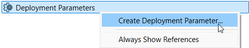
Since FME Flow stores all deployment parameters on FME Flow, the first step is to ensure you have selected and successfully connected to your FME Flow instance. You may have multiple FME Flow instances and connections, so it's important to check that you are connected to the FME Flow you want to create the deployment parameter on. For the parameter itself, you must give it a name, select the type, and then enter the value and any additional information. A database connection parameter requires you to enter the database type and select a connection, while a text parameter only asks you to enter the text string value.
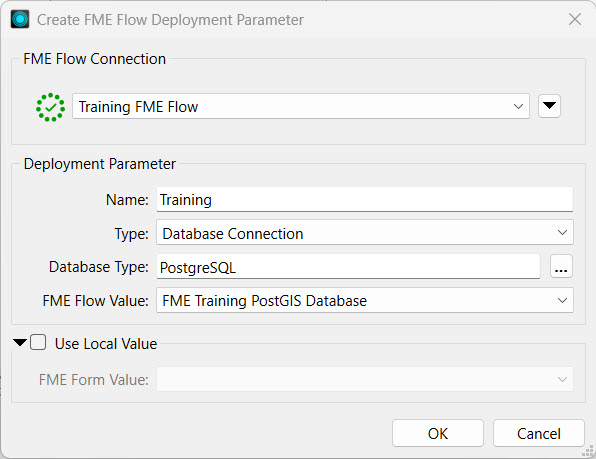
There's also an option to assign a different value when you use the parameter on FME Form, which is useful when testing workspaces before publishing.
After you create the parameter, you must link it to the reader, writer, or transformer that will reference the parameter value. For example, you would link a password parameter to a Connector transformer that requires a username and password authentication or link a database reader to a database connection parameter.
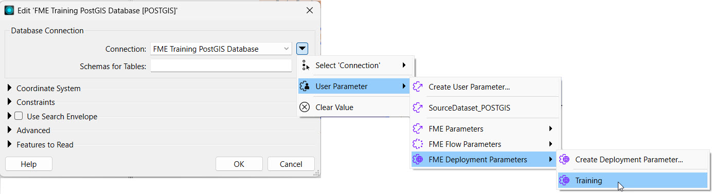
The deployment parameters you may link to include parameters you've created on FME Flow and FME Form because FME Flow stores all the deployment parameters.
If you connect to a different FME Flow instance from FME Form, the available deployment parameters will change to match the parameters stored on that instance. To ensure your FME Form and FME Flow are synced, you sync them from the FME Flow Connection toolbar. You should sync FME Form and FME Flow after you create or edit any deployment parameters.
In FME Form, you can only create and link to deployment parameters within workspaces. FME Flow manages, creates, and stores the parameters and their values.
The Deployment Parameter Store is a centralized location that stores all the deployment parameters for that FME Flow instance. You access it from Connections & Parameters on the side menu. For each parameter, you see the name, type, and value you assign to the parameter.
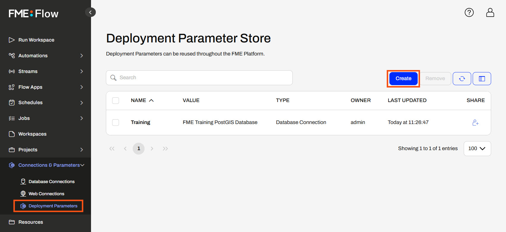
To create a deployment parameter, click Create and fill out a form identical to the one in FME Form except for the FME Flow connection.
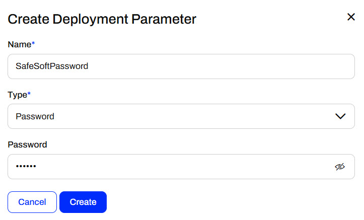
Once you create the parameter, you can use it in your FME workflows. You can sync your FME Form to your FME Flow instance and link deployment parameters directly in the workspace before deploying it on FME Flow or reference deployment parameters in Automations on FME Flow.
You can link to deployment parameters in Automations or workspaces. For workspaces, you must link the parameter in FME Workbench and then publish the workspace to FME Flow. In FME Flow Automations, you link deployment parameters to the workspace's published parameters, which you create as user parameters in FME Workbench. For example, you configure a workspace with a database connection parameter as input and then link a database connection deployment parameter.
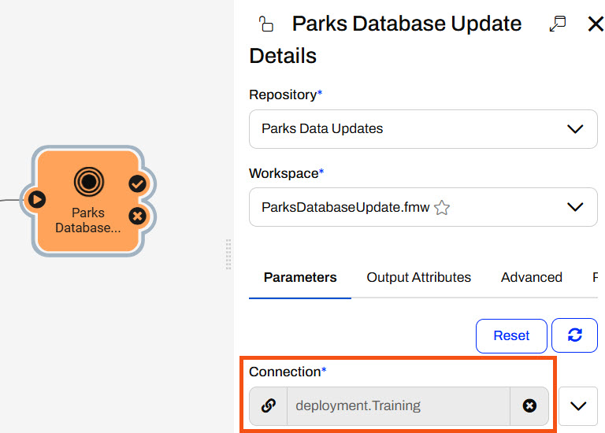
Now, if you migrate the Automation to another FME Flow, perhaps from your Development to your Production instance, the Automation will continue to reference the deployment parameter. The Production FME Flow needs a different database connection to run the workspace. As long as the deployment parameter with the same name references the Production database connection, you don't need to alter the Automation to run on the Production instance. Whether you reference deployment parameters directly in workspaces or in Automations, the same principles apply to migrating workflows between FME Flow instances.
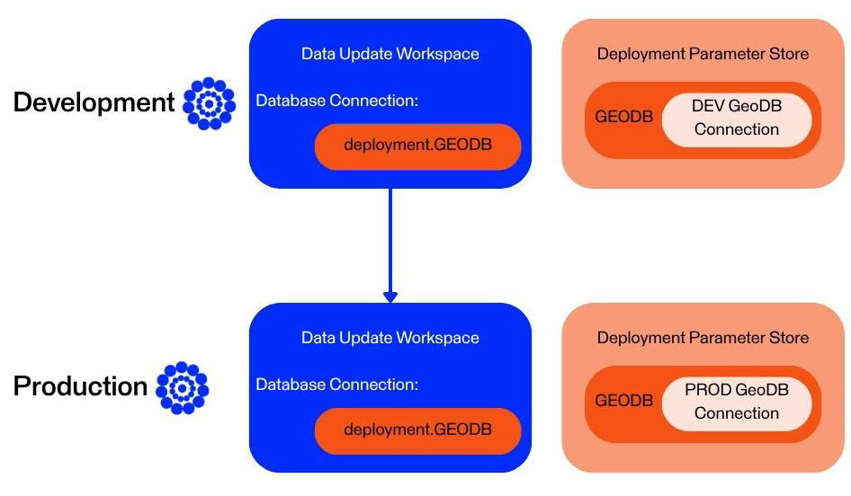
When you deploy the workspace on FME Flow, it uses the value stored in the deployment parameter. If you migrate the workspace to another FME Flow instance, it uses the alternate value stored with the same deployment parameter name.
Deployment parameters are essential in CI/CD (Continuous Integration/Continuous Deployment) workflows to deploy FME Flow consistently across different environments (e.g., development, staging, production) without modifying the core workspaces or project files. You can use the same components while dynamically injecting the correct values during deployment by setting environment-specific values—such as server URLs, database credentials, and file paths—as deployment parameters. This eliminates manual edits, reduces the risk of configuration errors, and makes deployments repeatable and reliable.
When you use deployment parameters alongside the FME Flow CLI (Command Line Interface), you can pass deployment parameters directly into commands to automate FME Flow configurations. Without human intervention, the script would supply different parameter values based on the FME Flow deployment environment. This enables fully automated continuous integrations and deployments.
For more information on deployment parameters and how to use them with CI/CD workflows and the CLI, see these tutorials:

Frank is an FME Flow Administrator for a city government's GIS department. He is developing a workflow that uses deployment parameters to easily reference a different source database depending on the environment running the workspace. He will create a deployment parameter on FME Flow and then take over working with Jennifer's workspace from the previous exercise to use the deployment parameter. The workspace uses a database connection to read in Parks and Neighborhoods. Frank wants to use a different database connection when he runs the workspace on FME Workbench and when he runs it on FME Flow.
You will only have one database to connect to for training, the FME Training PostGIS database. However, the theory of using deployment parameters will remain across FME Workbench and FME Flow to reference a different connection through the same parameter.
Frank navigates to FME Flow and opens the Deployment Parameter Store. He clicks Create to make a new deployment parameter.
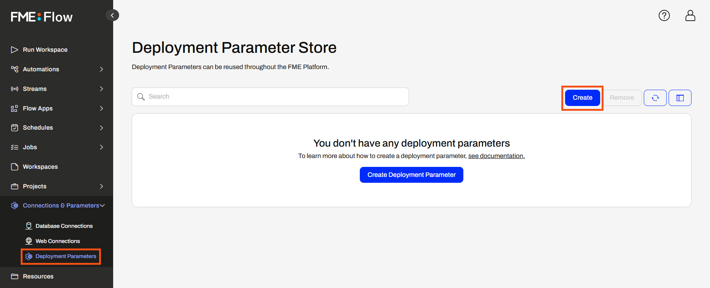
Frank names the parameter TrainingDatabase and sets the type to Database Connection for a PostgreSQL database. For the Value, he selects the existing FME Training PostGIS Database. FME Flow will use this connection when any workspace linking to the TrainingDatabase deployment parameter runs on this FME Flow.
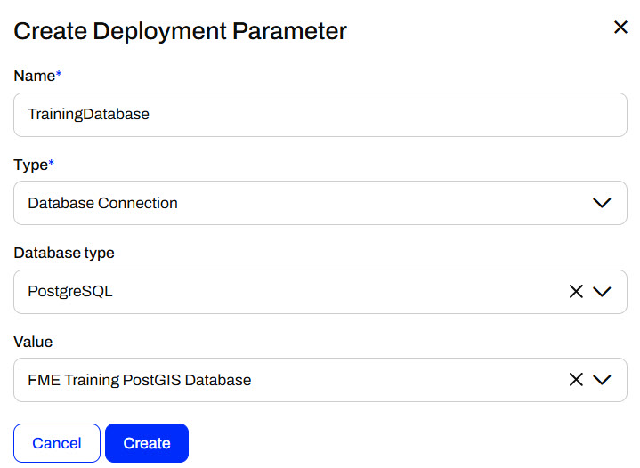
Frank clicks Create, and FME Flow lists his new deployment parameter in the Deployment Parameter Store.
Frank opens FME Workbench to Jennifer's workspace (C:\FMEData\Workspaces\DeployWorkflowsWithFMEFlow\deploy-workflows-to-multiple-environments.fmw).
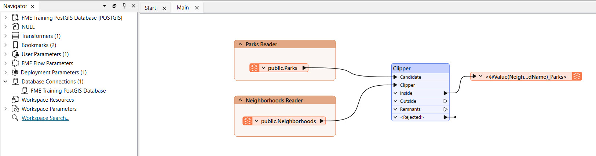
To sync FME Workbench with FME Flow and sync his new deployment parameter, Frank clicks the drop-down menu next to his FME Flow connection and selects Sync.
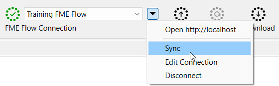
Frank expands Deployment Parameters and Unreferenced in the Navigator to see the parameter and the database connection it references.
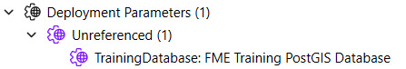
Frank would like to use a different database connection when running the workspace on FME Workbench, so he right-clicks the TrainingDatabase parameter and selects Set Local Value...
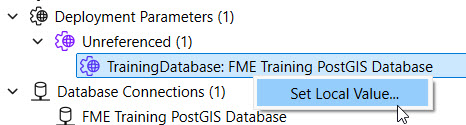
Frank sets the FME Form Value to the FME Training PostGIS Database and clicks OK.
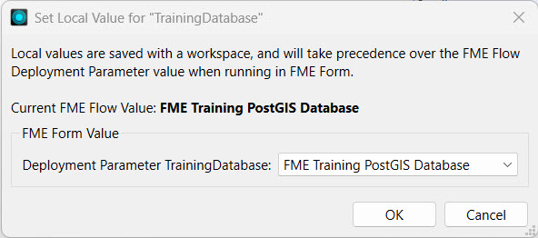
This is the same PostGIS Training database as the FME Flow connection references. Due to training limitations, you only have one database available to connect to so they are technically the same on FME Form and FME Flow in this example. However, in real-world applications, the FME Form value would be a different database connection than the FME Flow one.
Frank expands the POSTGIS reader parameters in the Navigator, right-clicks on the Connection, and selects Edit Parameter Value...
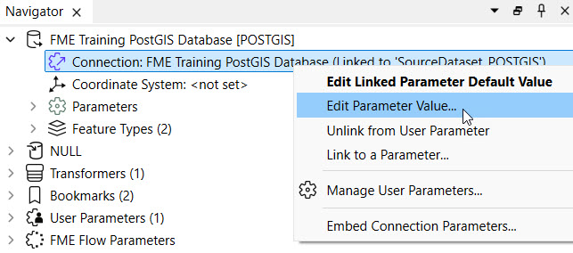
Frank selects the TrainingDatabase deployment parameter for the Connection, found within User Parameters, from the drop-down menu.
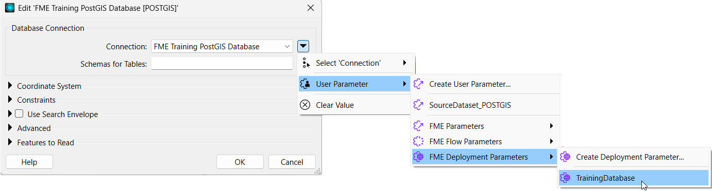
The source database connection now links to the deployment parameter, so Frank clicks OK.
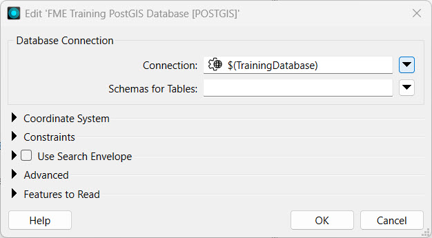
Since deployment parameters control values based on the environment where the workspace runs, having a user parameter that allows the end-user to change the database connection value does not make sense. Frank expands User Parameters, right-clicks the [SourceDataset_POSTGIS] Connection parameter, and deletes it.
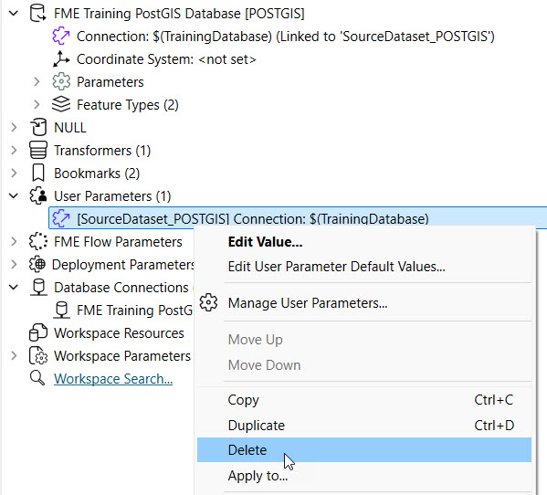
The PostGIS Connection now only references the TrainingDatabase deployment parameter.
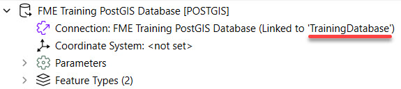
Frank runs the workspace to ensure it uses the deployment parameter to link to the database connection before deploying it on FME Flow.
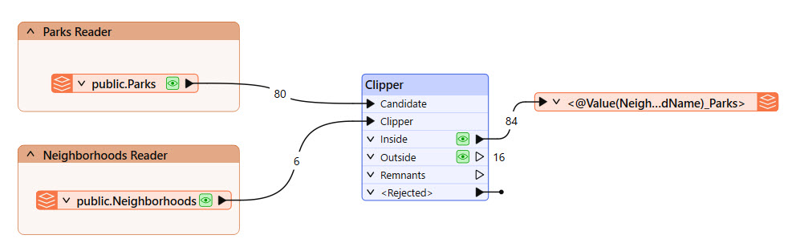
Frank publishes the workspace to FME Flow, saves it in the Training repository, and registers it with the Job Submitter service.


A workspace with a connection would normally prompt you to choose whether or not to publish the connection along with the workspace to FME Flow. However, because the reader connection parameter references the deployment parameter, there is no direct connection by default to publish with the workspace.
Frank navigates to FME Flow and runs his recently published workspace.
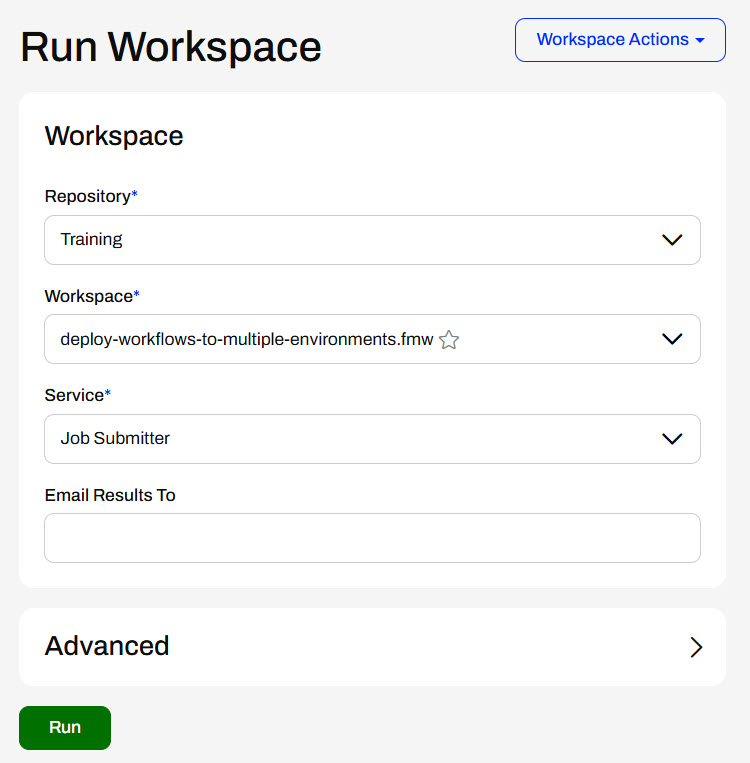
The workspace runs on FME Flow, and the reader's database connection references the FME Flow database connection through the deployment parameter. Frank has successfully created a workspace that references deployment parameters to use a different database connection when it runs on different FME environments.